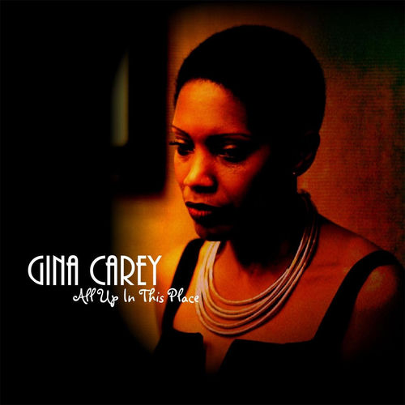

Gina Carey
Gina Carey is an American independent filmmaker and soul R&B / gospel music singer based in Palm Springs, California. Formerly known as Gina Green, Gina has since remarried and changed her name to Gina Carey.
Complete Discography & Tracklists (11)
2011 Melodic 🎵 10 Tracks
2013 Funk Rhythm & Soul 🎵 11 Tracks
2015 Can You Dig It 🎵 10 Tracks
2017 Fight 🎵 5 Tracks
2017 Funky Cold Brotha 🎵 0 Tracks
No tracks registered.